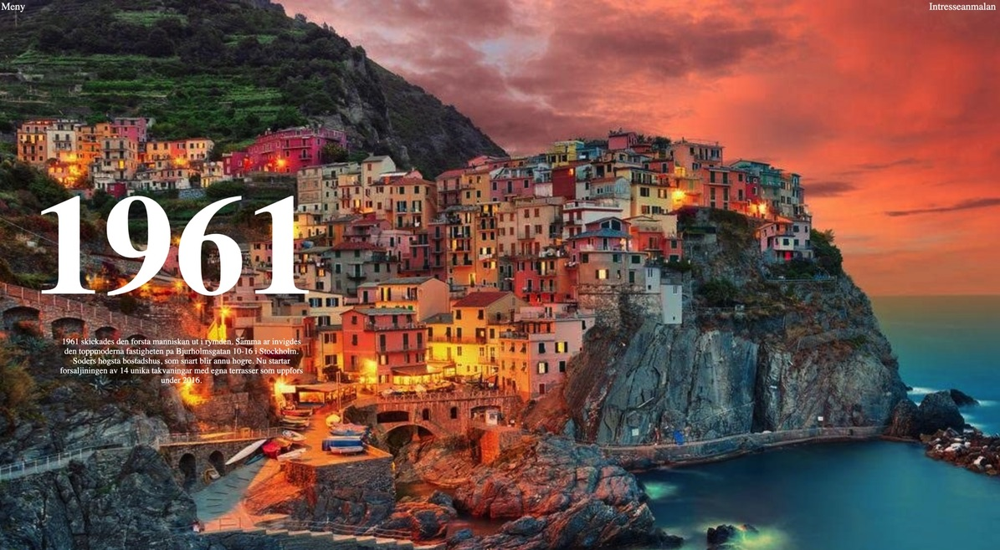

Lab 13: Typography I
Big Idea
The idea of this lab is to continue working with a partner and experiment about the use of block-level and typography css to recreate a webpage.
Challenge
It was difficult challenge, it did took me hours to find out how everything is perfectly placed. Took a while to find a matching font too, but it was a very interesting lab.
Problems
I wish, I could've find a better matching font, but it was taking so much time. I did tried.
Results
Here are the results, enjoy!
Original website screenshot
Fake live website screenshot